くらべる用いまの書体
いまの仕上がりの書体です。くらべるために並べています。
- 英語・数字
- Bahnschrift
- 日本語
- Noto Sans JP
- よいところくっきりして、遠くからも読みやすい
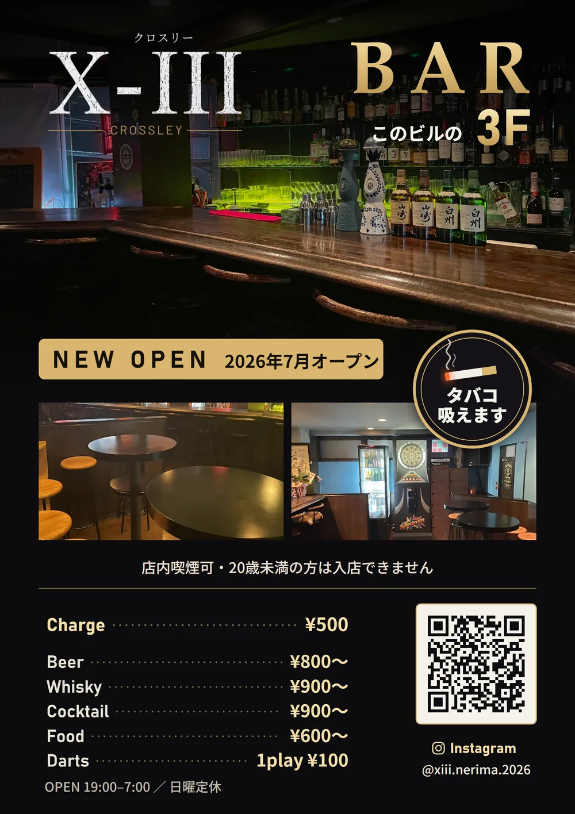
ポスター全体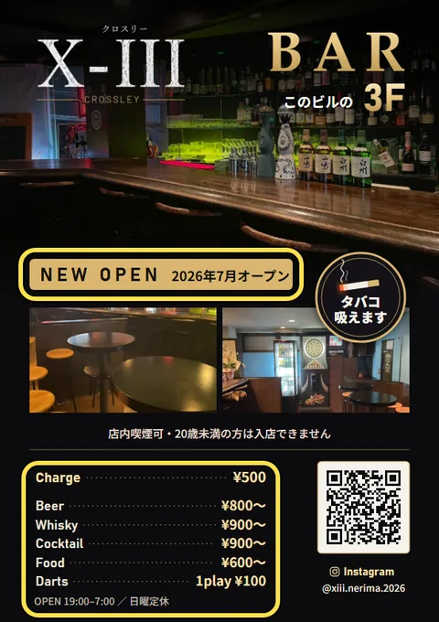
丸で囲んでいただいた所（NEW OPEN の札と、値段の一覧・営業時間）の書体だけを変えた10案です。ロゴ・BAR・写真・タバコのシール・QR コードは、そのままです。
「‹ ›」か、下の小さい画像で切り替えて、くらべてください（スマホは、画像を左右にすべらせても切り替わります）。いまの書体も、くらべられるように並べています。
気に入った案は「これがいい」を押してください。いくつ選んでもかまいません。
01／10上品で細身
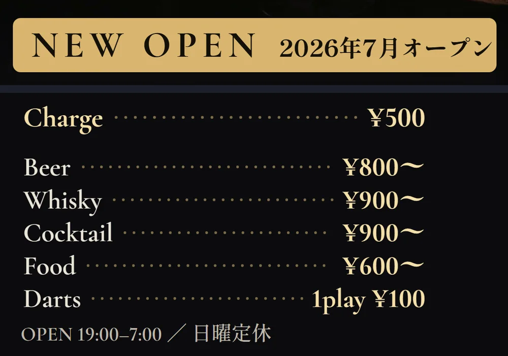
くらべる用いまの書体
いまの仕上がりの書体です。くらべるために並べています。

ポスター全体01上品で細身
線に強弱のある、品のよい字です。上の「BAR」と同じ仲間の字なので、全体がまとまります。
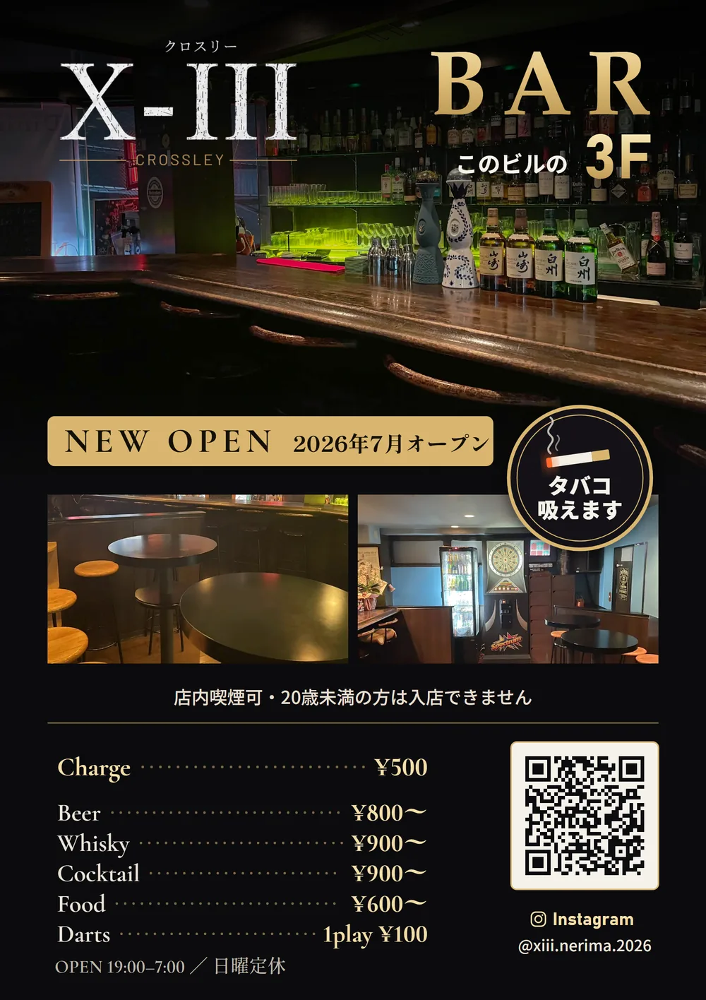
ポスター全体02ホテルのバーふう
石に彫ったような、格式のある大文字です。ホテルのバーのような高級感が出ます。
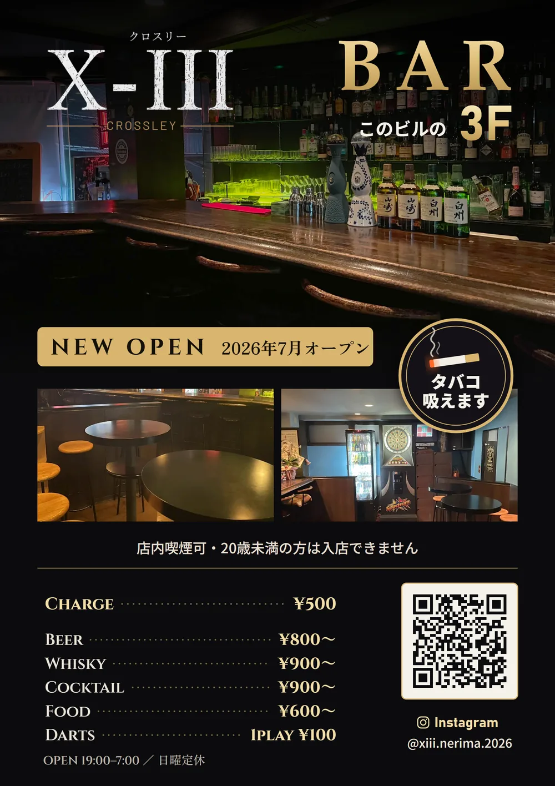
ポスター全体03太くて目立つ
太くて細長い字です。遠くからでも読みやすく、値段がはっきり見えます。
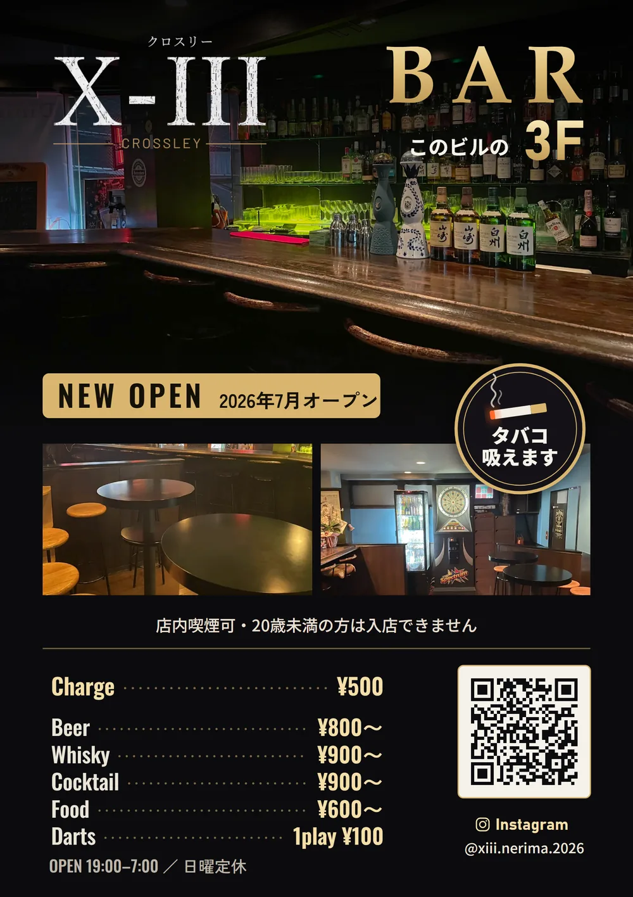
ポスター全体04細くてすっきり
細い線の、すっきりした字です。おしゃれで、今っぽい雰囲気になります。
05丸くてやさしい
角の丸い、やわらかい字です。はじめての人でも入りやすそうに見えます。
06レトロでおしゃれ
1920年代の洋酒場のような、飾りのある字です。ほかのお店と似にくく、目に留まります。
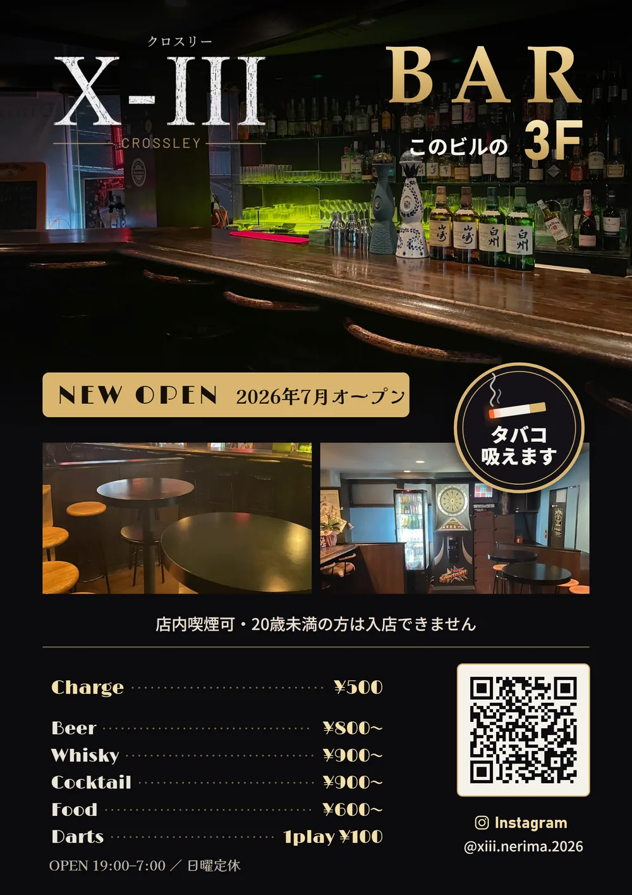
ポスター全体07ネオン管ふう
ネオン管のような丸い線の字に、ぼんやり光る効果をつけました。光る看板とよく合います。
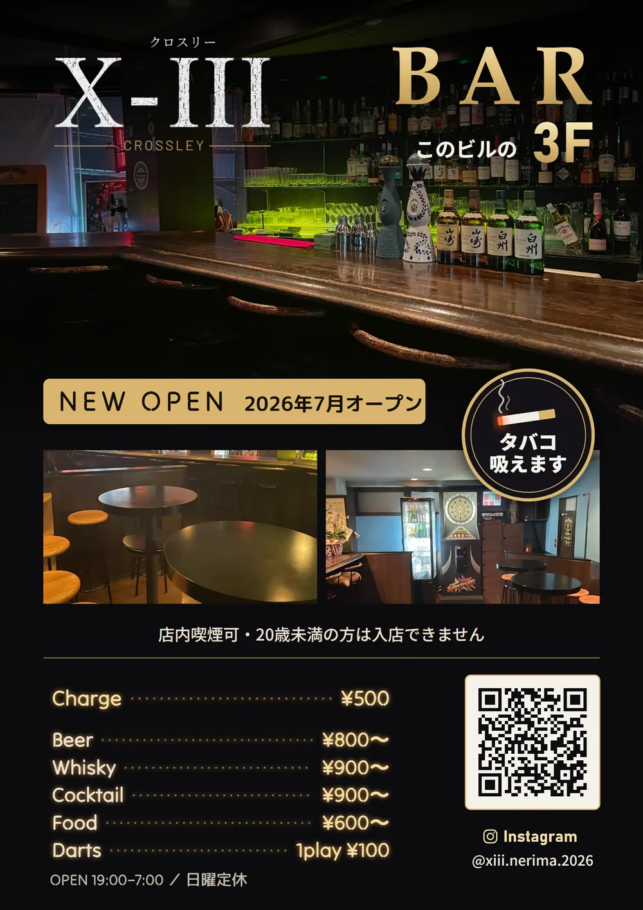
ポスター全体08手書きふう
ペンで書いたような手書きの字です。黒板のメニューのような、気軽な雰囲気になります。
09筆記体で華やか
NEW OPEN を筆記体（つづけ字）にして、値段は細身の字にしました。華やかで、大人っぽい雰囲気です。
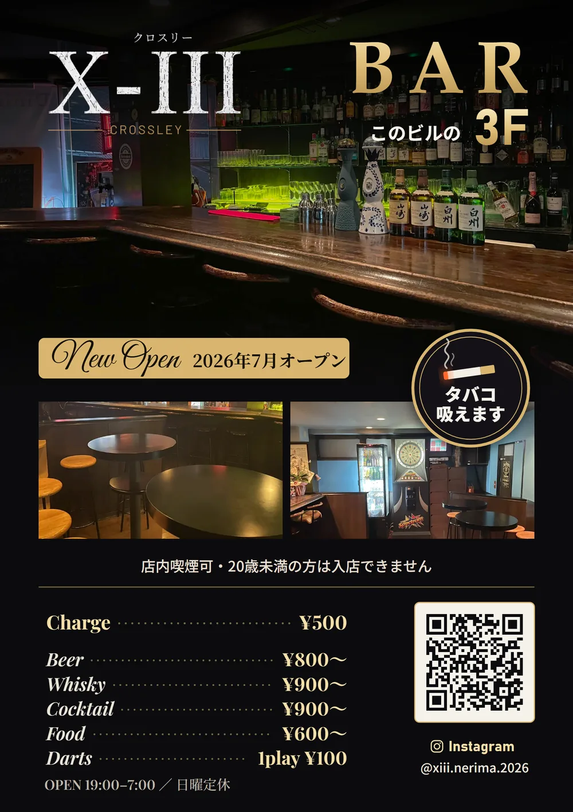
ポスター全体10元気で力強い
とても太い字です。いちばん目立ち、ダーツのある元気なお店らしさが出ます。
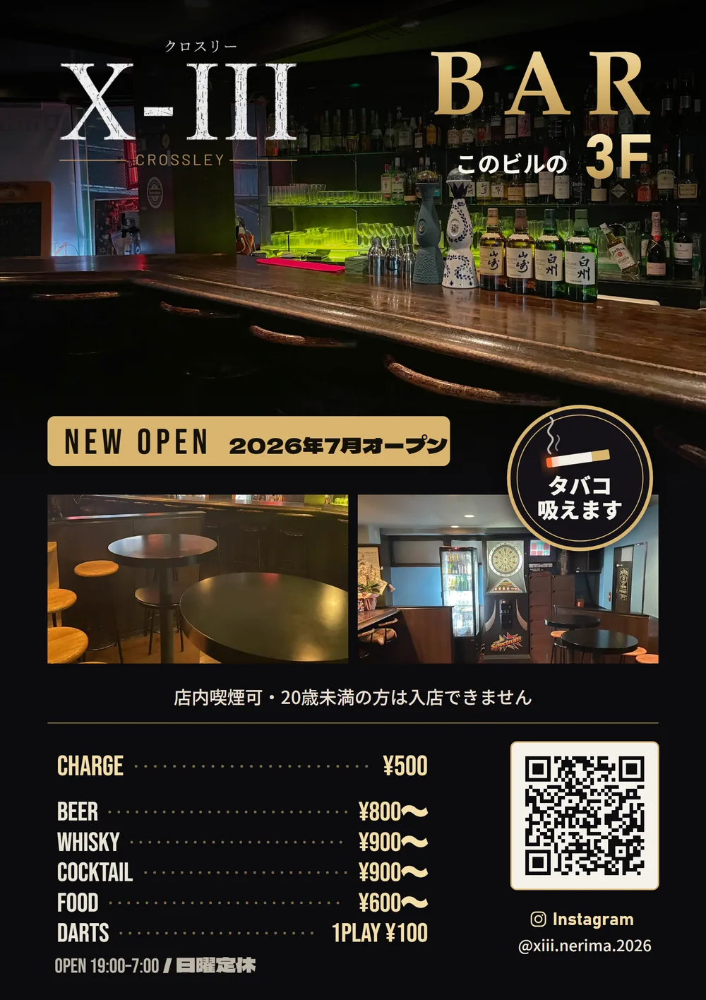
ポスター全体書体はどれも無料で、お店の看板や印刷に使ってよいもの（Google Fonts の書体）です。英語と日本語を別の案から選ぶこともできます（返事のひとことに書いてください）。
気に入った書体を選んで送ってください。上の「これがいい」で選んだものは、ここにも印が付きます。書いた内容はこのスマホ（パソコン）に残ります。
入口に置くまでの流れです。「いまここ」が、いまのところです。
値段と枠の色を決めるお店済
テーブルチャージ ¥500・ビール ¥800〜・ウイスキー ¥900〜・カクテル ¥900〜 と、枠の色（ブラック）をいただきました。
案を選ぶお店済
案09をもとに、タバコは丸いシールで控えめに、Instagram の QR コードを足すことに決まりました。
ポスターを仕上げる提案する人済
ご意見のとおりに直し、値段の目安を英語の表記にして、印刷用のデータ（A1・PDF）を作りました。
書体を選ぶお店いまここ
丸で囲んでいただいた所の書体を、10案から選んで、このページの「返事を送る」から送ってください（いくつ選んでもかまいません）。
選んだ書体で仕上げる提案する人
選んでいただいた書体で、ポスターと印刷用のデータを作り直して、このページでお見せします。最後に確かめていただき、OK なら印刷に出します。
スタンドを買うお店数日
モノタロウで、ブラック（注文コード 05348555）を注文します。届くまでの日数は在庫しだいなので、注文の前に商品ページで出荷日を確かめてください。
ポスターを印刷に出す提案する人3〜6日
OK をいただいたら、電飾フィルムの A1 で印刷を頼みます（印刷用のデータを送るだけです）。入稿から数日で届きます。
差し込んで、入口に置くお店
スタンドの表の枠を開けてポスターを入れ、コンセントにつなぎます。営業中だけ出して点けると、「点いている＝営業中」の合図にもなります。
全部で1〜2週間ほどが目安です（スタンドの在庫しだい）。スタンドの注文とポスターの仕上げは、同時に進められます。
決まったことや、いまは見なくてよいことは、たたんであります。見出しを押すと開きます。
ポスターを押すと、大きい画像が開きます。下は、入口に置いたときのイメージ（夜）です。
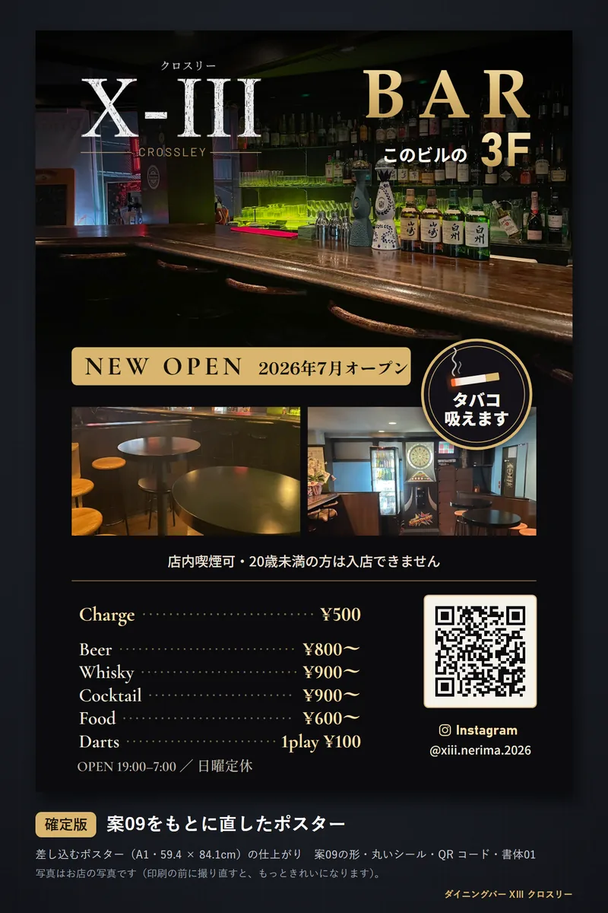
印刷用のデータ印刷会社には、このファイルを送ります。A1（59.4 × 84.1cm）のまわりに 3mm の塗り足しをつけた PDF です。いまは「00 いまの書体」のデータです。書体が決まったら、選んだ書体で作り直します。
印刷用データを保存PDF・2.9MB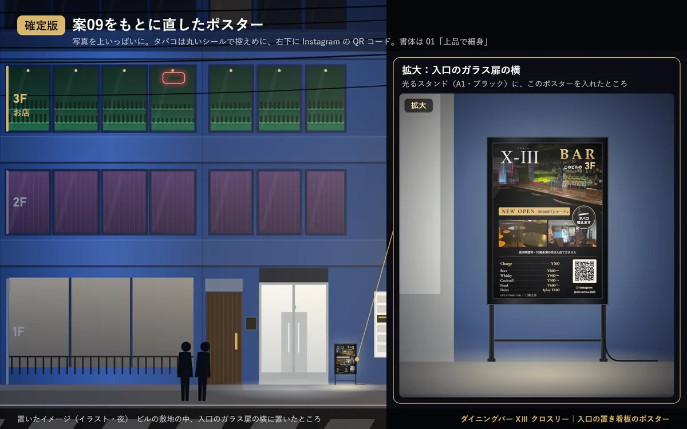
11月3日丸で囲んだ所（NEW OPEN の札と、値段の一覧）の、書体（字の形）の候補がほしい
直したことその所の書体だけを変えた10案を作りました（いまの書体も、くらべられるように並べています）。ロゴ・BAR・写真・タバコのシール・QR コードは、そのままです。
11月2日値段の目安の表記を英語に。チャージの「お一人様」は消す
直したことCharge ¥500・Beer ¥800〜・Whisky ¥900〜・Cocktail ¥900〜・Food ¥600〜・Darts 1play ¥100 にしました（Charge は一覧のいちばん上）。
11月2日案09をベースにしたい
直したこと案09（店内の写真を上いっぱいに）の形で仕上げました。
11月2日喫煙可の表記を、丸いシール（案02）のような感じで少し控えめに
直したこと大きな帯をやめて、写真の右下に丸いシール「タバコ吸えます」を貼った形にしました。案02のシールより少し小さめです。
11月2日Instagram の QR コードを入れたい
直したこと右下に入れました（12.4cm 角）。送っていただいた QR コードと同じ、お店の Instagram のページが開きます。読みやすいよう、短いアドレスで作り直しました。
10月31日値段：テーブルチャージ お一人様 ¥500・ビール ¥800〜・ウイスキー ¥900〜・カクテル ¥900〜
直したこと10案すべてのポスターに入れました。「〇〇〇」はなくなりました。
10月31日スタンドの枠の色：ブラック
直したこと置いたイメージとスタンドの図を、黒い枠にしました。ブラックは注文コードが変わり（05348555）、値段は ¥31,878 です（シルバーより ¥2,200 高い）。予算を計算し直しても、5万円以内に収まります。
10月30日喫煙可をもっと目立たせたい（「タバコ吸えます」のように）
直したことどの案にも、タバコの絵と「タバコ吸えます」を大きく入れました（帯・シール・見出しなど、案ごとに見せ方を変えています）。
10月30日2026年7月 NEW OPEN を押し出したい
直したことどの案にも「NEW OPEN 2026年7月オープン」を入れました（金の帯・角のリボン・スタンプ・大きな文字など）。
10月30日焼酎・テキーラはいらない
直したこと値段は、ビール・ウイスキー・カクテル・フード・ダーツの5つにしました。
10月30日写真の説明はいらない
直したこと写真の上の「カウンター」「テーブル席」「ダーツ 1ゲーム ¥100」を外しました（ダーツの値段は、値段の欄にあります）。
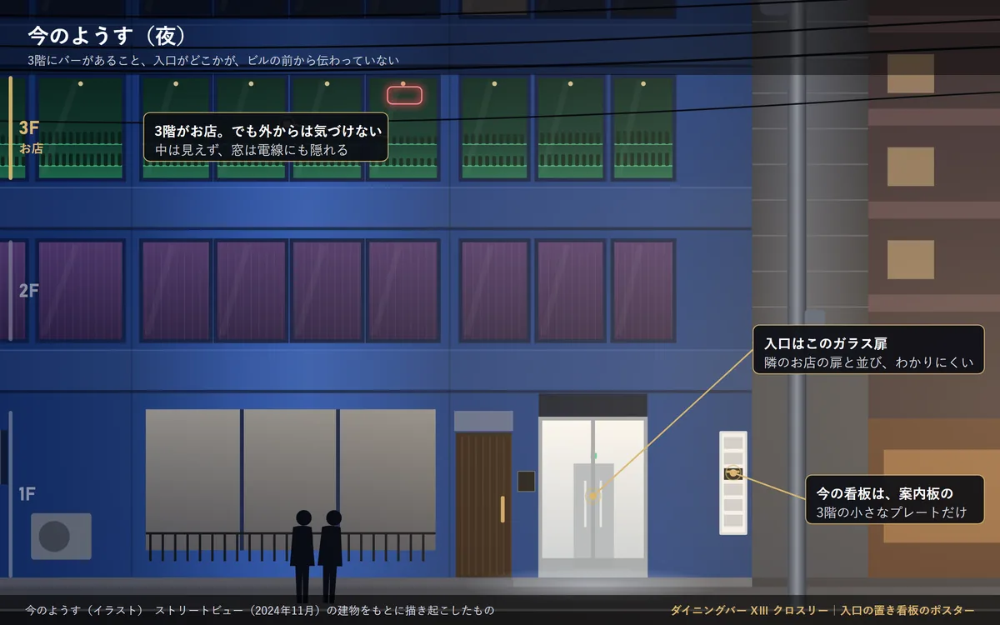
お店が選んだ、光る置き看板です（枠の色はブラック）。ポスターは、このスタンドの表の枠を開けて差し込みます。
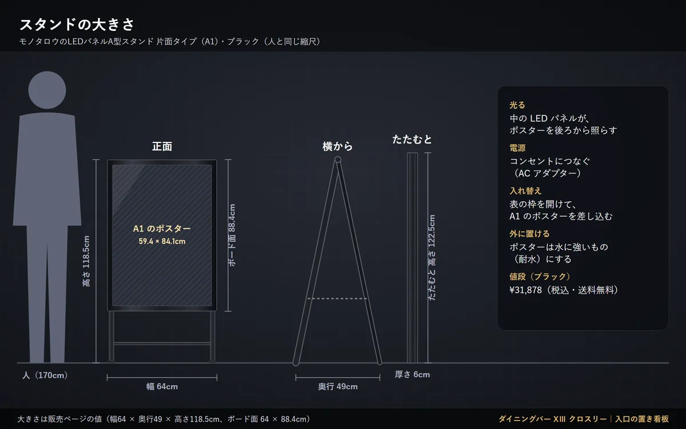
モノタロウ・高昇LEDパネルA型スタンド 片面タイプ（A1）
¥31,878税込（税別 ¥28,980）。送料無料（北海道・沖縄・離島は別）。メーカーからの直送で、返品はできません。
モノタロウの商品ページを見る注文コード 05348555・品番 alp-a1s-bk（ブラック）
出どころ：LEDパネルA型スタンド 片面タイプ A1・ブラック ¥31,878（モノタロウ）・同じスタンドのシルバー ¥29,678（モノタロウ）・同じスタンドの販売ページ（表の枠の開け方・ポスターの耐水の注意）（BESTSIGN）・このシリーズ（ALP）専用の AC アダプター（サインキングダム）・同じシリーズのバッテリー式（消費電力 25W）（サインキングダム）
値段は、いただいたものを入れました。ホームページの案と同じところから入れているので、変わったときも全部そろって直せます。
スタンド（ブラック）とポスター1枚で、予算の4分の3ほどです。残りで、予備のポスターや延長コードもそろえられます。書体を変えても、金額は変わりません。
| 買うもの | 金額（税込） | メモ |
|---|---|---|
| 必要スタンド本体LEDパネルA型スタンド A1・ブラック（モノタロウ） | ¥31,878 | 税込・送料無料出どころ：LEDパネルA型スタンド 片面タイプ A1・ブラック ¥31,878（モノタロウ） |
| 必要ポスターの印刷電飾フィルム A1・1枚 | ¥4,620〜¥5,500 | 印刷 ¥3,520〜¥4,400 ＋ 送料 ¥1,100（税込）出どころ：電飾フィルム A1 の印刷費 ¥3,520・送料 ¥1,100（サインモール）・電飾用ポスター A1・乳半PET ¥4,400・送料 ¥1,100（サイビッグネット） |
| あると安心予備のポスターもう1枚（汚れたとき・NEW OPEN を外すとき用） | ¥3,520〜¥4,400 | 同じ注文なら、送料は1回分出どころ：電飾フィルム A1 の印刷費 ¥3,520・送料 ¥1,100（サインモール）・電飾用ポスター A1・乳半PET ¥4,400・送料 ¥1,100（サイビッグネット） |
| あると安心屋外用の延長コード入口の近くにコンセントがないとき | ¥5,500 | 雨に強い「防雨型」5m の定価の例。安いものもある出どころ：防雨型の延長コード 5m・¥5,500（サンワサプライ） |
物を買う・印刷するお金だけの目安です（税込）。値段は 2026年10月に、それぞれの販売ページで確かめたものです。
印刷用のデータ印刷会社には、このファイルを送ります。A1（59.4 × 84.1cm）のまわりに 3mm の塗り足しをつけた PDF です。いまは「00 いまの書体」のデータです。書体が決まったら、選んだ書体で作り直します。
印刷用データを保存PDF・2.9MBかかりません。01〜10 の書体はどれも無料で、お店の看板や印刷に使ってよいもの（Google Fonts の書体）です。予算も変わりません。
できます。「英語は03、日本語は05」のように、返事のひとことに書いてください。その組み合わせで作ります。
できます。BAR や「このビルの 3F」、タバコのシールの字も、選んだ書体にそろえられます。返事のひとことに書いてください。
印刷の前なら、すぐに直せます（下の「返事を送る」に書いてください）。印刷したあとに変わったときは、刷り直して差し替えます（1枚 4〜5千円ほど）。
iPhone・Android のカメラで読めます（Instagram のアプリが入っていれば、アプリで開きます）。12.4cm 角あるので、1m ほど離れても読める大きさです。印刷用のデータから読み取れることも確かめました。
今のロゴは、チラシの写真から切り抜いたものです。A1 に大きく刷ると、近くで見たときに少しぼやけます。ロゴの元のデータ（ai・pdf・大きな png など）があれば、差し替えるときれいになります。
色のほかに、注文コードと値段が違います（ブラックは ¥31,878 で、シルバーより ¥2,200 高い）。大きさや光り方、ポスターの入れ方は同じです。
ポスターの「タバコ吸えます」は、お客さんへのお知らせです。法律で決まった標識（喫煙可能店などの標識）は、別に入口に貼る必要があります（下の「置くときの決まり・注意」を見てください）。
決まりはありません。新しさが伝わるうちは載せておき、外したくなったら、NEW OPEN のないポスターに刷り直して差し替えられます（1枚 4〜5千円ほど）。
入れることはできますが、光が通りにくく暗く見えます。雨や湿気でよれることもあります。光るスタンドには「電飾フィルム」がおすすめです（A1 で1枚 ¥3,500〜¥4,400 ほど）。
消費電力が 25W ほどなので、毎日12時間・月26日点けても、月に 250円ほどです（電気代 1kWh あたり31円で計算）。
スタンドは外に置ける作りです。ただ、雨や湿気が中に入ることもあると書かれているので、強い雨の日はしまうと長持ちします。
昼は光が目立たず、ふつうのポスターと同じように見えます。黒地なので、昼は落ち着いた見え方です。
いまの写真は、ホームページのために集めたものです。A1 に大きく刷ると粗く見えることがあるので、印刷の前にお店で撮り直すときれいです（スマホでも大丈夫。営業中の明かりで、手ぶれしないように）。
出どころ：同じシリーズのバッテリー式（消費電力 25W）（サインキングダム）・電気代の目安単価（1kWh あたり31円）（家電公取協の値を使う考え方）・電飾フィルム A1 の印刷費 ¥3,520・送料 ¥1,100（サインモール）・電飾用ポスター A1・乳半PET ¥4,400・送料 ¥1,100（サイビッグネット）・同じスタンドの販売ページ（表の枠の開け方・ポスターの耐水の注意）（BESTSIGN）
金額は、2026年10月にそれぞれの販売ページで確かめたものです（税込）。注文する前に、もう一度ページで確かめてください。イメージ画像はイラストで、建物は Googleストリートビュー（2024年11月）をもとに描き起こしたものです。ポスターの写真は、ホームページの案と同じお店の写真です。